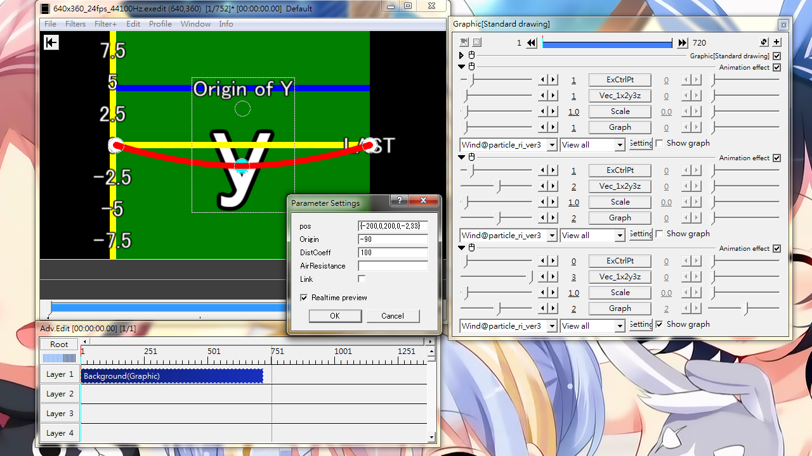
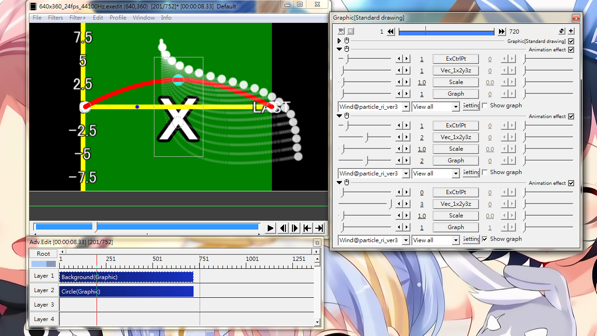

Fig12A: Setting up a Wind@ object with a wind source originating from y=-90. One extra anchor for x and y wind power curve. x curves up (Fig12B), y curves down, z remains a straight line at zero(not shown).

Fig12B: Effect of Wind object (Layer 1) on particle (Layer 2). The particle object has been set with a spread of zero, and attached Trajectory@ for illustrating particles' movement. The wind power curve is shown in Fig12A.
Wind
Simulate the effect of wind. This effect should not be attached to the object with ParticleRender@particle_ri_ver3 on it. Layer ID of the wind object should be smaller than the particle object. The Wind object and the particle object below should have the same duration.
Sliders
ExCtrlPt
Add extra control anchor(s) to the wind power graph. There are already 2 anchors by default in order to define a straight line. A maximum of 10 extra anchors can be added.
Vec_1x2y3z
Define which wind power vector to set.
1: x component (horizontal force)
2: y component (vertical force)
3: z component (depth)
Scale
A multiplier to adjust overall wind power.
Graph
If multiple Wind@ has been attached (Fig12A), only the "Graph" option for the last Wind@ will be effective.
The number is the n'th Wind@ on this object. For example, if the first Wind@ sets X (Vec_1x2y3z=1), 2nd one sets Y (Vec_1x2y3z=2) and the last one sets Z(Vec_1x2y3z=3). Then on the one that sets Z, setting Graph=1 will display the power graph for X-component, Graph=2 shows the Y component, Graph=3 presents the Z-component.
Check box
Show graph: Check to display the wind power graph, uncheck to hide it. When there are multiple Wind@ effect (Fig12A), checking any one of them will display the graph. In the absence of particle object in the layer below, this graph cannot be hidden.
Setting dialog
pos
Coordinates for control anchors.
Origin
If left empty, wind starts from infinity. Enter a value to have wind start from particular location (See Fig12A for example). The origin location is visualized as a thick blue line on the screen.
DistCoeff
Wind power decay coefficient. A larger value allows wind to travel further away from origin. A small value cause wind effect to disappear within a short distance.
AirResistance
A factor for adjusting influence of wind on particle wrt. particle speed.
A small value cause little difference among all particle speed. A large value cause more difference among fast and slow particles.
Link
Link subsequent Wind@ with settings in the same force component. Use this when 10 more anchors is not enough.